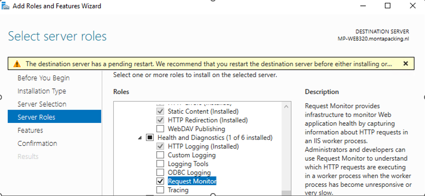

Installatie Webservers
Inhoud
Algemeen
Voor alle webservers gelden de paragrafen "IIS Inrichting", "Websites
inrichten" en "livezet-scripts".
Voor de webclusters komt daar nog het hoofdstuk "Webcluster" bij.
IIS Inrichting
Server Standaard inrichten.
IIS Installeren.
Bij IIS installatie bij Role Services bij Security "Request Filtering"
en "IP and Domain Restrictions" en "Windows Authentication"
aanvinken.
Bij Common HTTP Features onderstaande installeren :

en bij Application Development de onderstaande opties:

Bij Health and Diagnostics de “request monitor” 
Hierdoor is het mogelijk om in IIS onder Worker Processes te dubbelklikken op een application pool en dan zie je wat er draait. Hiermee kan een developer analyseren welke functie in een website het betreft.
Start IIS en installeer "Microsoft Web platform", installeer de
extension (kan via "Get New Web Platform Components" helemaal rechts,
als dit niet werkt kan dit ook via
https://www.microsoft.com/web/downloads/platform.aspx ).
Selecteer daarna rechts "Get New Web Platform Components", installeer
dan "URL Rewrite"
Vraag aan Development welke versie van dotnet-hosting gewenst is er
installeer deze vanuit \\mp-fs102\Software\.NET
Download en installeer de Log Parser op de
webserver: https://www.microsoft.com/en-us/download/details.aspx?id=24659
Stel de protocollen in met het tool "S:\8.0 Automatisering\1.0
Software\8.0.0 Diversen\IISCrypto.exe" als onderstaand:

Onderstaande alleen als bekend is dat de website dan nog goed
benaderbaar is.
Anders de best practice van IIS Crypto accepteren.

Zie verder ook : "Montapacking\Monta - IT-Support - Documenten\Security\SSL Certificaten\SSL TLS en Cipher suites.docx"
Stel uploadReadaheadsize in.
 **
**
**
Als het om een web-cluster gaat installeer dan eerst het failover-cluster en het web-cluster
Failover Cluster
Bij gebruik van SentinelOne is het belangrijk dat het pad %Systemroot%\Cluster ge-exclude is in SentinelOne.
Installatie: Failover Cluster en IIS installeren (IIS zoals
bovenstaand).
Bij een Failover-cluster kunnen de extra benodigde IP-adressen alleen
via Powershell toegevoegd worden.
Commando: .. Add-ClusterResource -Name 10.10.202.xxx -ResourceType "IP
Address" -Group "Cluster Group" (Cluster groep niet vervangen door
naam cluster)
Het gaat dan om de Other resources uit onderstaand plaatje:

 In de Failover Cluster Manager kun je
vervolgens de IP-adressen verder configureren en online brengen.
In de Failover Cluster Manager kun je
vervolgens de IP-adressen verder configureren en online brengen.
Stel hierbij de policies als onderstaand in :
Voeg nog een File share witness toe.
Maak hiervoor eerst op de MP-DMZ01 (VM op de EIN-ESX05) in de folder
"C:\Quorum" een nieuwe directory aan "Quorum-WebClusxx". Geef hier de
lokale administrators full control-rechten op evenals de CNO (dus bijv.
MP-Webclusxx$). Maak een hidden share voor deze directory met Everyone Full Control.
Kies in Failover Mangement "Configure custom Quorum settings" en
"configure a file share witness", laat deze verwijzen naar
\\mp-dmz01\Quorum_WebClusxx$.
H E E L ... B E L A N G R I J K , stel bij de properties van de file
share witness in dat als een restart unsuccesfull is er geen
failover plaats moet vinden.

Laat de webserver in Rotterdam elke woensdag en zaterdag rebooten na
05:00 (na het installeren van de patches om 04:00).
WSFC-foutmelding oplossen
The backup operation for the cluster configuration data has been canceled. The cluster Volume Shadow Copy Service (VSS) writer received an abort request. Zie https://wiki.montapacking.nl/index.php?title=SentinelOne
Op een failover cluster kan event 1544 "The backup operation for the cluster configuration data has been canceled. The cluster Volume Shadow Copy Service (VSS) writer received an abort request." optreden.
Onderstaande commando's lossen dit op: (Doe dit op beide cluster nodes)
sentinelctl unprotect -k "passphrase"
sentinelctl config -p agent.vssConfig.vssProtection -v false
sentinelctl config -p agent.vssSnapshots -v false
sentinelctl protect
sentinelctl config -p agent.vssConfig.enableLogsWriterVssWriter -v false -k "passphrase"
De vss-instellingen zijn als volgt te bekijken : sentinelctl config vssConfig
Webcluster
Algemene clusterinrichting
Het Webcluster bestaat uit 2 servers die samen een Failover Cluster
vormen. Hiermee worden 3 cluster-IP-nr's beschikbaar gemaakt.
Het eerste IP-nummer is beschikbaar voor algemene doeleinden, het tweede
voor websites in het montapacking.nl-domein, het derde voor websites in
het montaportal.nl-domein.
Middels DFS worden de bestanden van de website op beide cluster-servers
gelijk gehouden.
Tot slot is er in IIS een shared configuratie gedefinieerd waarbij er
gebruik gemaakt wordt van de config-files van de webserver die op een
schijf staat die met DFS gesynchroniseerd wordt.
[]{#_Toc90975210 .anchor}DFS
Installeer DFS (Alleen DFS Replication) en stel DFS in op de folders
"E:\IISConfig", "E:\WWWRoot" (doe dit niet voor "F:\Logs" omdat
webservers vaak zeer veel logfiles bevatten). Edit de Membershipstatus
en vul er de foldernaam in.
Herstart de servers, pas daarna gaat DFS werken.
Shared Configuratie in IIS.
Open "Shared configuration", kies rechts voor Export configuration en
exporteer naar "E:\IISConfig".
Vul het wachtwoord in uit het wachtwoordenboek (hierdoor kan altijd een
shared config terug gezet worden van een filebackup).
Vink vervolgens "Enable shared configuration" aan, stel
"E:\IISConfig" en vul de usernaam en het wachtwoord NIET in.
Vervolgens wordt er gevraagd om de encryption key, geef hier het
wachtwoord in op.
Op de andere server van het cluster behoeft alleen gekozen te worden
voor "Enable shared configuration", en dan het encryption wachtwoord.
Bij het overzetten van een website van een weblcuster naar een ander webcluster kan het nodig zijn om een export van de configuratie te maken en die in te lezen op het nieuwe webcluster.
Stel ook de shared log in op F:\Logs\Inetpub
Websites aanmaken
Selecteer de server en importeer bij Server Certificates het certificaat
voor montapacking en voor montaportal en voor monta.nl (dit is vanuit
Passwordstate te downloaden).
Kies de personal store.
Dit moet op beide webservers in een cluster uitgevoerd worden.
Maak een account aan met de naam site.xxxxx (niet langer dan 20 posities) in "Montauser\Sites". Zet password op never expires. Maak een directory aan onder E:\WWWroot met de naam van de website en geef het site-account schrijfrechten. Geef ook rs.devops schrijfrechten en geef de groep IT Full Control-rechte.
Voer het commando "C:\Windows\Microsoft.NET \Framework64\v4.0.30319\Aspnet_regiis.exe -ga montapacking\site.xxxxxxx" uit om het site-account rechten te geven op de .NET-map.
Maak de website aan. Sitename en Hostname gelijk houden.
Maak (bij de cluster-webservers) eerst (op een aparte partitie) de directory F:\Logs aan met als rechten "Everyone - Modify" en "Lokale
Administrators - Full Control".
Maak vervolgens onder F:\logs een subdirectory aan met de naam van de website.
Share F:\Logs met "Share Permissions" met de groep IT Read-rechten en
Administrators Full Control, "Security Permissions "Everyone -
Modify" en "Administrators - Full Control".
Maak in IIS voor elke website een website aan onder Sites.
De Default Web Site mag worden verwijderd.
Voeg, indien nodig, bij de bindings type https toe met het SSL certicaat
van de betreffende website (bij een cluster moeten eerst de extra
IP-adressen gemaakt zijn).
Als er verschillende certificaten op één en hetzelfde IP-nr worden
gebruikt (bijv. cdn.montaporal.nl en montaportal.nl op dezelfde server
dan moet "Require Server Name Inidication" aangezet worden. The
HTTPS-Only Standard - Server Name Indication
(cio.gov)

Wijzig ten slotte in de application pool de identity naar een
monta-account.
Stel het volgende in bij Advanced settings :
 \
\
In geval van databasetoegang maak in AD onder
"Montagroep\Databases\Prod" de groepen "DB-Prod-xxxxx-Owner" en
""DB-Prod-xxxxx-RW" aan.
Probeer eerst met het site-account in de groep RW of read-write-rechten
voldoende zijn voor de applicatie.
Maak in SQL op de database bij security de user "DB-Prod-xxxxx-RW" aan.

Het account IUSR moet ook leesrechten krijgen op de wwwroot-map.

Binnen sommige websites zijn applications gemaakt, die kun je onder een eigen applicationpool laten draaien, die dan eerst aangemaakt moet worden. Stel bij weinig gebruikte websites de "Idle Time-out (minutes) binnen de application pool in op 1740. Overweeg bij de Logging ETW aan te zetten, dit levert events op in de windows-logs. Je kunt ook op site/application-nivo via Error Pages , edit feature settings - detailed errors aanzetten, dan krijg je bij het browsen meer info bij fouten.
Maak een A-record aan voor de website in DNS.
Om te testen kun je er een Default.htm inzetten:
<!doctype html>
<html lang-"nl">
<head>
<meta charset="utf-8">
<title>Testomgeving Printing2</title>
</head>
<body>
Testpagina Printing2<br/>
</body>
</html>
Maak een Netwerk Definitie aan in de SUM als het een interne website
betreft.
Vraag development de securityheaders goed te zetten, zie
https://securityheaders.com/ en
https://geekflare.com/http-header-implementation/
Bij stateless websites kunnen er meerdere worker-processen worden
ingesteld via de advanced settings van de application-pool. Overleg met
de maker van de website wat in te stellen.
Maak in PRTG onder websites een sensor aan voor http en voor iis.
Quorum
We gebruiken een fileshare whitness naar de EIN-MGMT01 voor het LAN en de MP-DMZ01 voor het DMZ.
Securityheaders
Stel voor de website de volgende securityheaders in onder HTTP Response Headers
Name: X-frame-Options Value DENY
Name: Content-Security-policy Value default-src 'self';
Name: X-XSS-Protection Value 1;mode=block
Name: X-Content-Type-Options Value nosniff
Name: Strict-Transport-Security Value max-age=31536000; includeSubDomains; preload
name: Referrer-Policy Value no-referrer
Livezet-scripts
Een overzicht van de websites staat in
Teams\Monta-IT-Support\NLDC\Webservers.
Installeer op de webserver 7-zip.
Als er gebruik gemaakt wordt van livezetten via een Devops pipeline is onderstaande niet nodig
Zet de gebruiker montapacking\rs.scriptadmin in de lokale administrators group.
Maak in de directory E:\livezetten per website 3 mappen aan:
xxxxxx.xxxxxxx.nl-tmp
xxxxxx.xxxxxxx.nl-logs
xxxxxx.xxxxxxx.nl-backup
Maak een share aan voor de directory Livezetten met de groep IT en de
lokale administrators met Full Control voor de share permissies en voor
security.
Maak het account rs.devops lid van de groep localadmin_webserverxxxx.
Vanuit Azure Devops zorgt Development er voor dat de content in
"xxxxxx.xxxxxxx.nl-tmp" gezet wordt en dat het livezet-script wordt
aangeroepen.
Kopieer de bestanden naar \\mp-xxxx\LiveZetten\xxxxxxxxx.nl-tmp van
de betreffende website.
Maak voor elke website een scheduled taak aan op de betreffende webserver.
Tab - General
De naam van de taak zetten we op "SetLive-[websitenaam]"
Verander bij "When running the task, use the following user account" de credentials van de juiste rs-user. (Wachtwoord in MontaPassword)
Selecteer "Run Whether user is logged on or not"
Selecteer "Run with highest privileges"
Tab -- Actions
Action - "Start a program"
Details -- "E:\IISConfig\Scripts\ SetLive-[websitenaam].cmd
montapacking\rs.scriptadmin
In de map \\mp-webxx\LiveZetten\xxxxxxxxxx.nl-logs zijn logs te
vinden van het SetLive script.
Er worden backups gemaakt in de map
\\mp-webxx\LiveZetten\xxxxxxxxxxx.nl-backup.
Je kunt dus een backup terugzetten door de files uit een backup in de
xxxxxxxxxxxxx.nl-tmp map te zetten en weer het
"SetLive-xxxxxxxxxxxxx.nl" script te draaien.
Onderstaande wordt nu geconfigureerd middels de GPO "GP - Remote Scheduled Tasks" en hoeft dus niet meer handmatig geconfigureerd te worden op de Webserver zelf.
Zorg er voor, bij windows server 2019 dat onderstaande aan staat bij de firewall:

De werking van "remote scheduled tasks" kan getest worden door op de mp-proc04 een setlive-script te maken.
Maak in \\mp-proc04\c$\scripts
daarvoor een setlivebatchfile aan (zie aanwezige batchfiles als
voorbeeld) en maak in de task scheduler een map aan voor de nieuwe
webserver (cluster) met daarin een taak die verwijst naar de aangemaakt
batchfile.

Testen
Kopieer het bestand "Monta - IT - General\Handleidingen\Servers\Bijlagen\Webservers\ Default.htm" naar E:\WWWroot\sitenaam op de server en pas de inhoud aan naar de site.
Bij een nieuwe website kan in DNS een verwijzing gemaakt worden aar de
website.
De website is nu te testen via bijv http://www.website.nl of
https://www.website.nl
Als het om een bestaande website gaat moet er een alias gemaakt worden
en ingesteld als hostnaam in IIS. In onderstaand voorbeeld is dat
pietjepuk.montapacking.nl

Registreer vervolgens pietjepuk in DNS onder het betreffende IP-nr.
Om de nieuwe website van buitenaf op bijv. pietjepuk.montapacking.nl te
kunnen testen moet er een exrta IP-nr in de externe DNS gezet worden.
Een alternatief is om in de lokale hostfile een verwijzing te maken naar het nieuwe IP-nummer.
Log Cleaner
Maak een logcleaner-taak aan op de MP-PROC04 onder de map Efulfilment \
Filecleaner.
De actie is bijvoorbeeld :
C:\Scripts\UniversalFileCleaner\UniversalFileCleaner.exe -tn
"MpWeb100LogsCleaner" --path \\mp-web100\Logs --days 30
--removeFilesInSub --removeSubMap
Country Blocking Exceptions
Voor de webservers waarom de externe api en de montaportal draaien wordt
er ni de firewall (dc-rou01) een exception gemaakt zodat deze servers
vanuit landen benaderd kunnen worden waarvoor country-blocking aan
staat.


Website van buitenaf bereikbaar maken
Websites die van buitenaf bereikbaar moeten zijn worden op de volgende manier ontsloten.
Klanten / Consumenten maken via internet connectie met een webserver in het DMZ.
Vestigingen van montapacking maken ook via internet connectie met een webserver in het DMZ.
Servers in het LAN in het datacentre maken direct via de Sophos Firewall DC-ROU01 connectie met het DMZ.

Maak de volgende instellingen
Kies in de NLDC-IP-lijst op het tabblad "NorthC | ExternIP" een IP-nummer voor de website.
Maak op de SUM netwerk-definities voor deze webserver of dit webcluster, zie als voorbeeld "DNS_MP-WebClus-01" en alle definities die daar in zitten. Gebruik hiervoor de interne adressen van de server (dus in de 192.168.201-reeks). Deploy deze naar alle routers.
Om er voor te zorgen dat de locaties de website kunnen vinden dient er in de SUM een netwerkdefinitie aangemaakt te worden voor de website die verwijst naar het externe nummer (dus in de 192.53.249.x reeks). Deploy deze definities naar alle routers. In de DHCP-scope van het DATA-VLAN in alle locale routers staat de Sophos-router als eerste DNS-server. Een device die bijvoorbeeld "rest.montapacking.nl" wil resolven zal dat eerst bij de Sophos uitvoeren en die verwijst naar het externe IP-nr waardoor de connectie "buitenom" gaat.
Maak op de DC-ROU01 eerst een additional address aan voor het externe IP-nr (bijv "4.249.53.193.a2b.ein1.montapacking.it") onder Interfaces en dan tabblad "Additional addresses".
Maak daarna 2 NAT-rules aan voor bijv "DNS_MP-WebClus03-Montapacking", één voor HTTP en één voor HTTPS en gebruik hierbij het "NorthC externe IP-adres".
Vink aan dat er firewall rules gemaakt moeten worden.Maak voor de betreffende website in de externe DNS (https://www.transip.nl/cp/) een A-record aan.
Kies op de webserver bij de website voor "Edit bindings" en maak een binding aan voor HTTP en één voor HTTPS.
Servers toevoegen aan firewall-rule 75

Indien er "IP Adress and Domain restrictions" actief zijn moeten er externe IP-nummers worden toegevoegd (in het LAN betreft de de interne IP-reeksen).
De website is nu voor klanten, consumenten en Monta-vestigingen bereikbaar.
Om er voor te zorgen dat Servers in het LAN in het datacenter direct naar de DMZ gaan dient er voor de website een A-record aangemaakt te worden in de domain-DNS (MP-DC03/DC04) naar het interne nummer (dus in de reeks 192.168.201.x).
Overleg met Development of er een URL-rewrite nodig is om van HTTP naar HTTPS over te schakelen als de website aangeroepen wordt op http.
Indien nodig stel dan het volgende in:
Voor ASP.NET :
Maak een URL-rewrite aan van HTTP naar HTTPS zodat bij het aanroepen van
een website op http deze naar https overschakelt (indien nodig).
Kopieer hiervoor een deel van de webconfig van een andere server die dat
al heeft.
Kopieer hiervoor de inhoud van "Monta - IT-Support -
Documenten\Servers\Webservers\Redirect-webconfig.txt" in de
webconfig van de website.
Voor ASP.NET Core :
Dit werkt niet met een url-rewrite maar met een startup-class:

Voeg evt Deny/allow rules toe op IP-reeksen in IIS bij "IP Adress and Domain restrictions" onder de betreffende website. Zie als voorbeeld software.montapacking.nl
Docker
Docker kan op aanvraag van Development toegepast worden, standaard wordt
dit niet gebruikt.
Zie voor de installatie van Docker: Handleiding Installatie
Docker